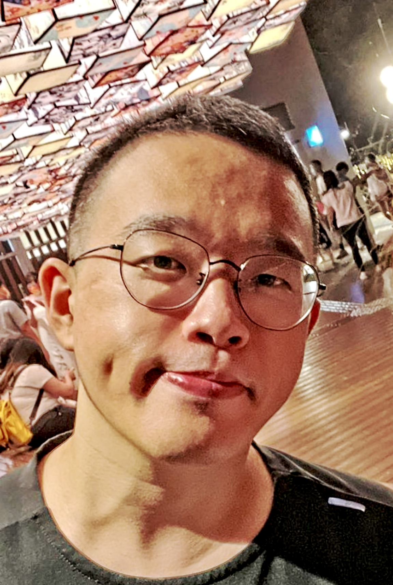

|  |
Hong-Yu Zhou Postdoctoral fellow Department of Biomedical Informatics Harvard Medical School Harvard University Email: whuzhouhongyu at gmail.com |
- On the Job Market this year! Looking for positions in computational health, computer science, and related fields! Any contacts or opportunities are welcome!
- I am a postdoctoral fellow at the Harvard DBMI, working with Pranav Rajpurkar.
- My research lies in the intersection of artificial intelligence, medicine, and data science.
- I develop
- I am currently researching pathways to improve the scalability of medical AI systems:
- Health insights at scale: How can one access a multitude of high-quality health insights (diagnoses, etc) at a notably reduced expense?
- Holistic multimodal analytics: How can we leverage multimodal biomedical data (medical images, lab results, etc) to improve the modeling accuracy and to what extent can it do so?
- Scaling system design: Can we improve the modeling accuracy by increasing the data or model scale, for example, integrating large language models? How far can we go?
- I finished my PhD at The University of Hong Kong, advised by Yizhou Yu and my master degree at Nanjing University, advised by Jianxin Wu. Before that, I received my undergraduate degree from Wuhan University.
Recent Updates
- [2024/09] Two papers → Nature Communications, One paper → Nature Medicine
- [2024/08] Three papers → MICCAI 2024
- [2024/07] One paper → MLHC 2024
- [2024/06] Three papers (including Swin-UMamba) → MICCAI 2024
- [2024/05] One paper → MIDL 2024
- [2024/02] We released Swin-UMamba!
- [2024/02] Three papers → ISBI 2024
Paper (Selected / Full)
A Transformer-based Representation-learning Model with Unified Processing of Multimodal Input for Clinical Diagnostics.
Hong-Yu Zhou*, Yizhou Yu*, Chengdi Wang*, Shu Zhang, Yuanxu Gao, Jia Pan, Jun Shao, Guangming Lu, Kang Zhang, Weimin Li.
A multimodal transformer for clinical diagnostics.
Nature Biomedical Engineering 2023 | Paper | Code | ESI - Top 1% highly cited papers
Hong-Yu Zhou*, Yizhou Yu*, Chengdi Wang*, Shu Zhang, Yuanxu Gao, Jia Pan, Jun Shao, Guangming Lu, Kang Zhang, Weimin Li.
A multimodal transformer for clinical diagnostics.
Nature Biomedical Engineering 2023 | Paper | Code | ESI - Top 1% highly cited papers
Advancing Radiograph Representation Learning with Masked Record Modeling.
Hong-Yu Zhou*, Chenyu Lian*, Liansheng Wang, Yizhou Yu.
Multimodal modeling for visual representation learning.
ICLR 2023 | Paper | Code
Hong-Yu Zhou*, Chenyu Lian*, Liansheng Wang, Yizhou Yu.
Multimodal modeling for visual representation learning.
ICLR 2023 | Paper | Code
nnFormer: Volumetric Medical Image Segmentation via a 3D Transformer.
Hong-Yu Zhou*, Jiansen Guo*, Yinghao Zhang*, Xiaoguang Han, Lequan Yu, Liansheng Wang, Yizhou Yu.
A widely adopted baseline for 3D medical image segmentation.
TIP 2023 | Paper | Code | ESI - Top 1% highly cited papers
Hong-Yu Zhou*, Jiansen Guo*, Yinghao Zhang*, Xiaoguang Han, Lequan Yu, Liansheng Wang, Yizhou Yu.
A widely adopted baseline for 3D medical image segmentation.
TIP 2023 | Paper | Code | ESI - Top 1% highly cited papers
A Unified Visual Information Preservation Framework for Self-supervised Pre-training in Medical Image Analysis.
Hong-Yu Zhou*, Chixiang Lu*, Chaoqi Chen, Sibei Yang, Yizhou Yu.
TPAMI 2023 | Paper | Code
Hong-Yu Zhou*, Chixiang Lu*, Chaoqi Chen, Sibei Yang, Yizhou Yu.
TPAMI 2023 | Paper | Code
Generalized Radiograph Representation Learning via Cross-supervision between Images and Free-text Radiology Reports.
Hong-Yu Zhou*, Xiaoyu Chen*, Yinghao Zhang*, Ruibang Luo, Liansheng Wang, Yizhou Yu.
Nature Machine Intelligence 2023 | Paper | Code
Hong-Yu Zhou*, Xiaoyu Chen*, Yinghao Zhang*, Ruibang Luo, Liansheng Wang, Yizhou Yu.
Nature Machine Intelligence 2023 | Paper | Code
Preservational Learning Improves Self-supervised Medical Image Models by Reconstructing Diverse Contexts.
Hong-Yu Zhou*, Chixiang Lu*, Sibei Yang, Xiaoguang Han, Yizhou Yu.
ICCV 2021 | Paper | Code
Hong-Yu Zhou*, Chixiang Lu*, Sibei Yang, Xiaoguang Han, Yizhou Yu.
ICCV 2021 | Paper | Code
Comparing to Learn: Surpassing ImageNet Pretraining on Radiographs by Comparing Image Representations.
Hong-Yu Zhou*, Shuang Yu*, Kai Ma, Cheng Bian, Chunyan Chu, Hanruo Liu, Yefeng Zheng.
MICCAI 2020 | Paper | Code
Hong-Yu Zhou*, Shuang Yu*, Kai Ma, Cheng Bian, Chunyan Chu, Hanruo Liu, Yefeng Zheng.
MICCAI 2020 | Paper | Code
Selected Awards
- First place in AASCE 2019, held in conjunction with MICCAI 2019. We proposed an approach to accurately estimate the spinal curvature in Adolescent Idiopathic Scoliosis (AIS).
- First place in Segthor 2019 Challenge, held in conjunction with ISBI 2019. We proposed a method to segment organs at risk segmentation in Computed Tomography (CT) images.
- First place in AI4Health Challenge, held by Thales group which provides solutions for over 50% of worldwide radiology examinations. In this challenge, we proposed a novel methodology to accurately detect key points in X-rays with a mean error smaller than 0.3 pixels.
- Second place in ODIR 2019, held by Peking University.
Academic Service
I regularly serve as reviewers for following conferences and journals.- Conference: for ICLR, ICML, NeurIPS, CVPR, ICCV, ECCV, AAAI, MICCAI, etc.
- Journal: for Nature, Nature Biomedical Engineering, Nature Machine Intelligence, TPAMI, TMI, MedIA, TKDE, TMM, TIP, Pattern Recognition, iScience (Cell family), etc.